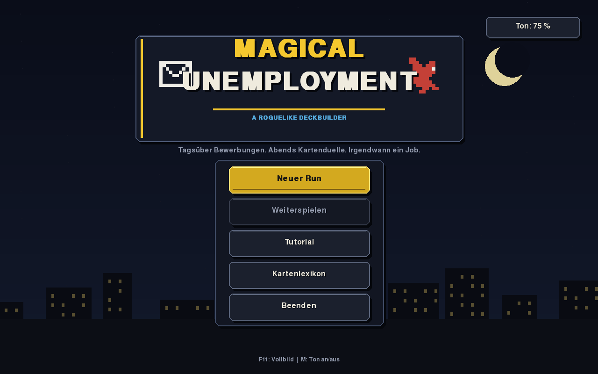
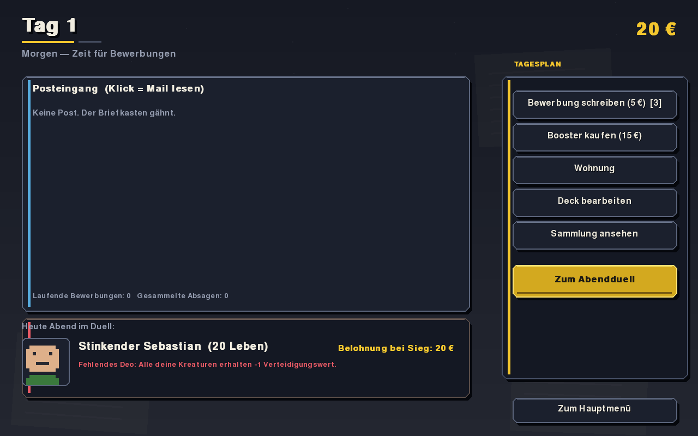
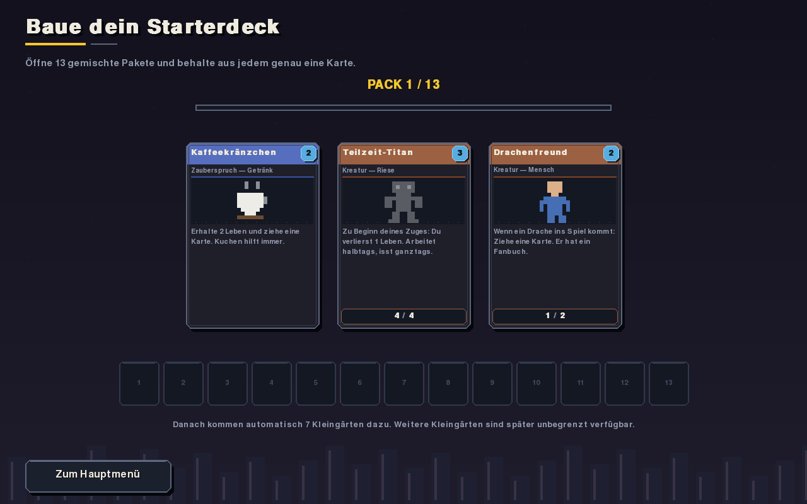
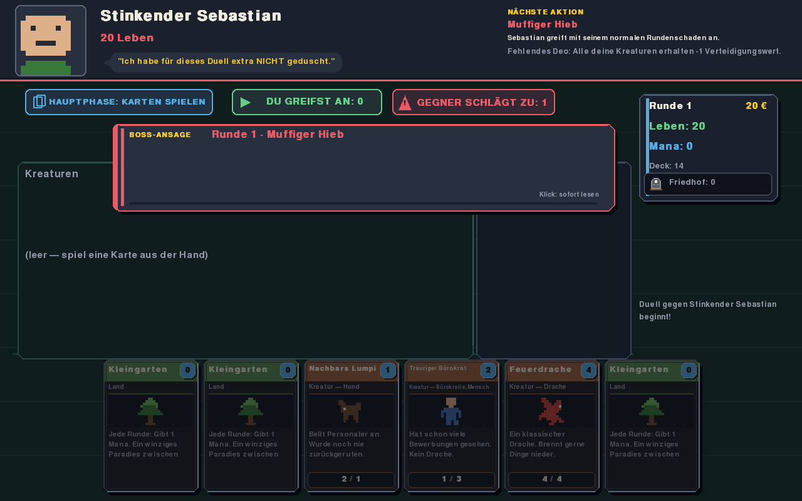
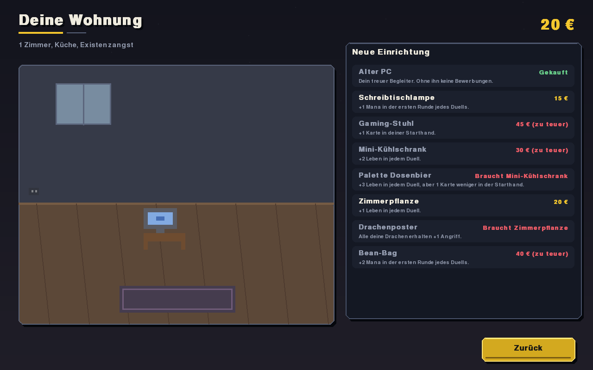

Dragons
Expensive threats that reward committing to the tribe.
Playable prototype · Python + Pygame
Send applications by day. Fight strange card duels by night. Somehow, both are about surviving until the next morning.
A German-language roguelike deckbuilder where an awkward job hunt becomes the strategy layer for a growing deck, a tiny apartment, and an eight-boss climb.

The premise
Every run alternates between a mundane morning and a magical evening. Spend scarce money on applications, cards, or your apartment—then find out whether the deck you built can carry you through the night.
Write cover letters and wait for replies that are usually creative rejections.
Draft boosters, tune your deck, and choose which synergies deserve your money.
Furnish a tiny apartment for persistent bonuses in the duels ahead.
Read the boss intent, commit attackers, hold blockers back, and survive the night.

By day
Applications cost money and take time to answer. Booster packs strengthen the deck; furniture strengthens every future duel. There is never quite enough cash for all three.

By night
Combat is about timing: play lands, assemble an engine, choose attackers, and decide which creatures must stay behind. Boss intents make the danger legible without making the answer obvious.

Your run, your deck
A new run opens thirteen mixed packs. Keep exactly one card from each, then add seven unlimited basic lands. The first strategic choice happens before the first application is sent.
Expensive threats that reward committing to the tribe.
Draw cards, file forms, and turn paperwork into an engine.
Mill cards deliberately and bring the best creatures back.
Current in-game footage
The interface uses one coherent pixel system: cut-corner panels, physical card frames, restrained animation, and a nocturnal palette that follows the run from inbox to duel.


“I skipped the shower
just for this duel.”
Play the current build
Download the repository as a ZIP, or clone it from the terminal:
git clone https://github.com/Dreckhoff/magical_unemployment.git
cd magical_unemploymentmacOS: double-click Magical Unemployment.command. It prepares the environment on first launch.
Any platform:
python3 -m venv .venv
source .venv/bin/activate
pip install -r requirements.txt
python play_gui.pyRequires Python 3.11+. An interactive tutorial is available from the main menu.
Under the hood
The architecture borrows a habit from scientific computing: keep rules, parameters, and presentation separate, so each part stays understandable and testable.
Stats, tags, text, and effects are plain data. Adding a normal card does not touch the engine.
Small registered handlers combine damage, draw, auras, triggers, and reanimation.
Cards respond to shared game events, so new cards can interact with old ones naturally.
The rules engine has no graphics dependency; core, meta-game, cards, and screens are testable in isolation.